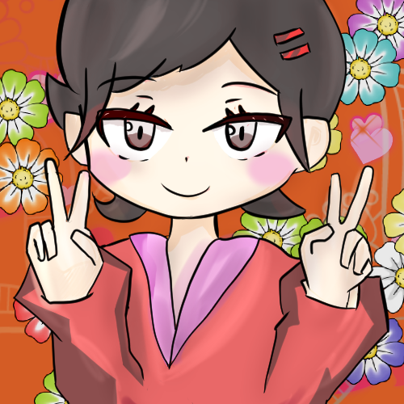

ABOUT
Toshitake Kodama
Excelを主に使う事務職。独学でプログラミングを学習中。
webデザインの職業訓練とunityのプログラミングブートキャンプを続けて受講。その後、C言語プログラミング科の職業訓練を受講。
ゲーム開発系オンラインサロンに参加中。MDK(マードック)という名義で活動しています。
最近は主にunityによるゲーム開発を行なっています。unityroomというサイトにwebGL形式で11作品アップしています。
さらにGooglePlayストアに2作品ほどアップしています。
SKILLS
主な習得スキル
Unity, Excel, VBA, C, HTML, CSS, Javascript, jQuery, Access, RubyOnRails, Photoshop, Illustrator
WORKS

大正浪漫遊戯 〜やがて君と踊り出す〜
共同開発5作目
テトリス風パズルゲーム
プログラムとレベルデザインを担当
サウンド担当の方と音作りの協力も